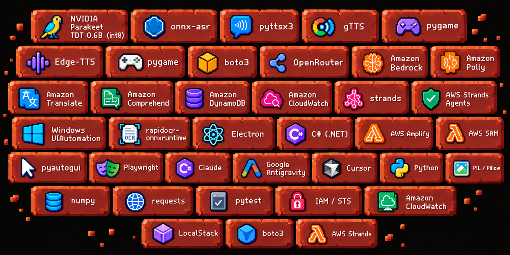
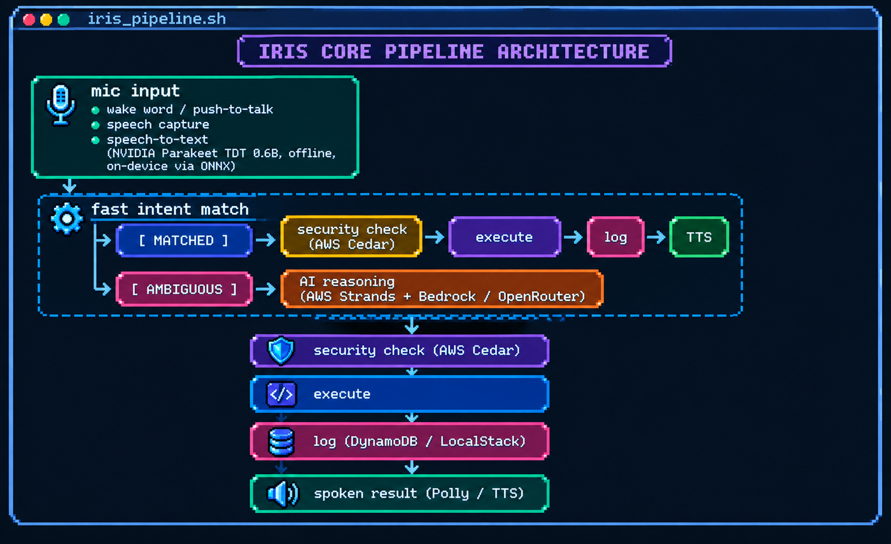
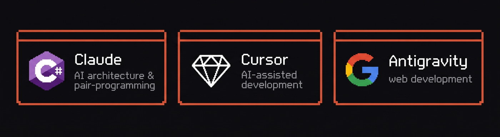

>tech_stack
The Engine Behind Digital Braille
Iris is engineered with a strict Local-First, Cloud-Enhanced architecture built for zero-latency accessibility. By combining high-performance offline voice transcription on device with deterministic zero-trust authorization and optional cloud reasoning, Iris remains fast, private, and 100% operational — with or without an internet connection.

>execution_pipeline
Every command Iris hears follows the same path. Simple, exact requests are handled fast and entirely offline — no cloud involved. Only genuinely ambiguous or open-ended requests escalate to reasoning. Every command, on either path, passes through the same security check before it's allowed to execute.

>aws_architecture
Listening stays on-device for total privacy and low latency. AWS makes Iris smarter, safer, and fully accountable: local Cedar policies enforce zero-trust authorization in under 1ms, Strands Agent SDK structures tool execution, and DynamoDB logs a permanent, tamper-resistant audit trail. Without AWS, core commands run 100% offline; with AWS, Iris gains deep reasoning, neural voice synthesis, and enterprise-grade auditability.
![Pixel-art table of AWS and open-source services: Amazon Translate for voice-to-voice translation across 75+ languages, Amazon Comprehend for sentiment detection on spoken input, Amazon DynamoDB as a managed NoSQL database, AWS Amplify hosting the public demo site, AWS Strands Agents orchestrating multi-agent AI workflows with tools, LocalStack simulating AWS services locally at zero cost, boto3 as the official AWS SDK for Python, IAM/STS for least-privilege identity and temporary credentials, and Amazon CloudWatch for metrics and logs.](assets/aws-arch.png)
>other_dev_tools
The stack above is what iris runs on. The tools below are what we built it with.
